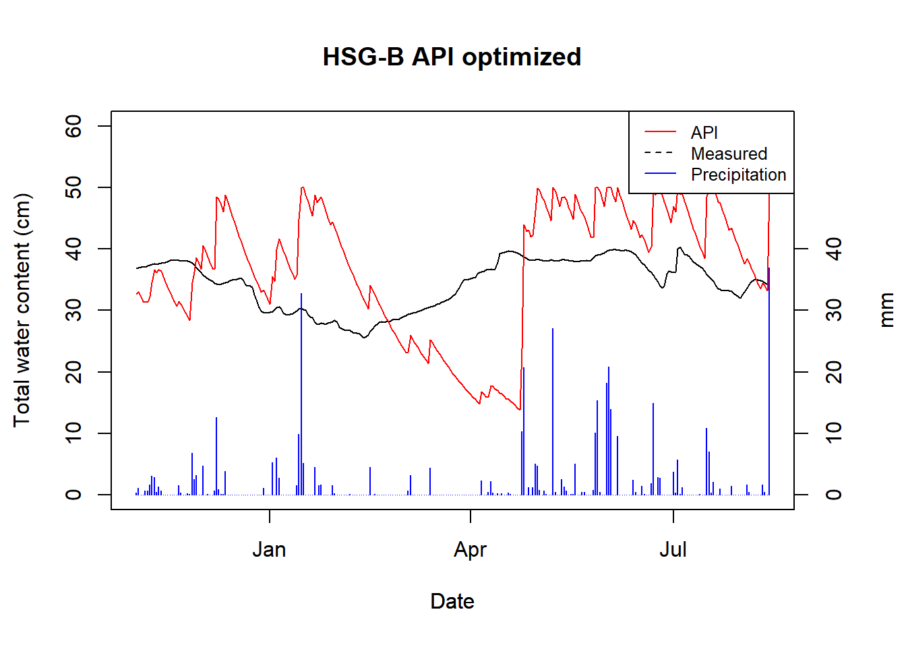
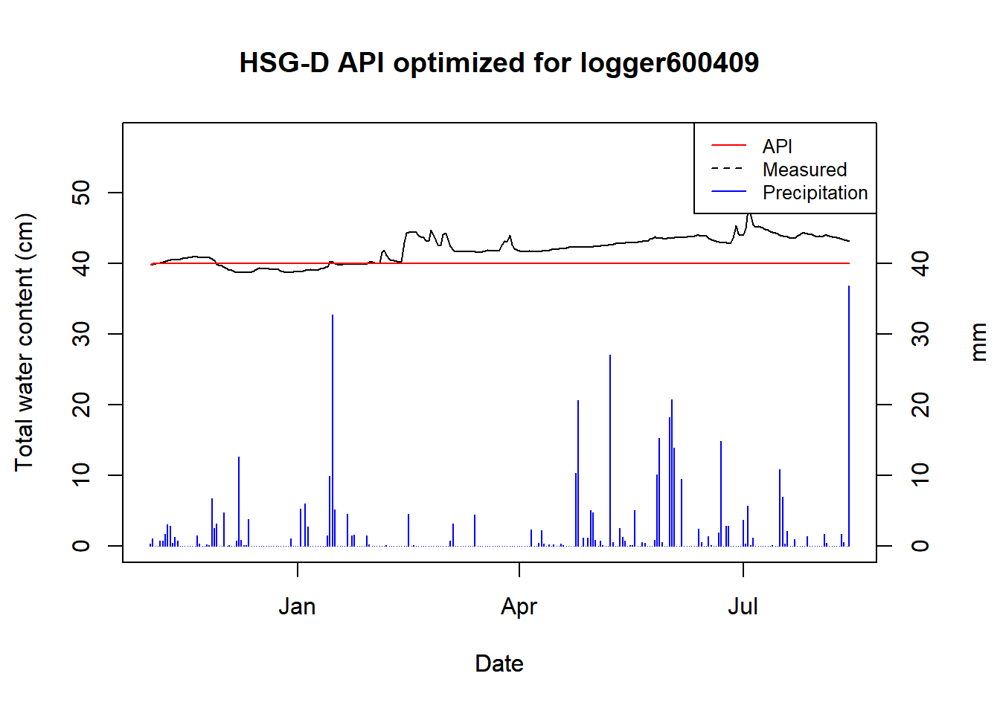
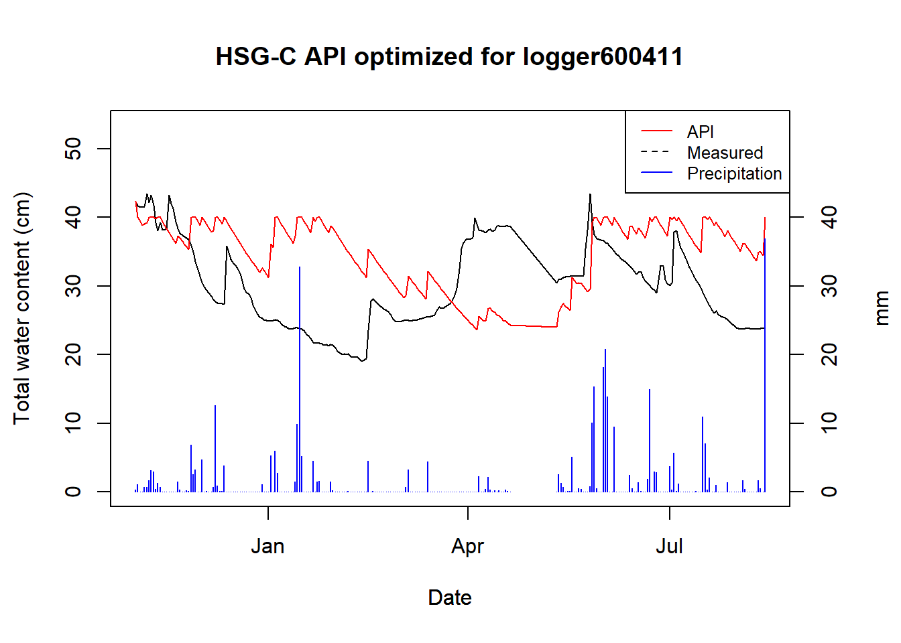
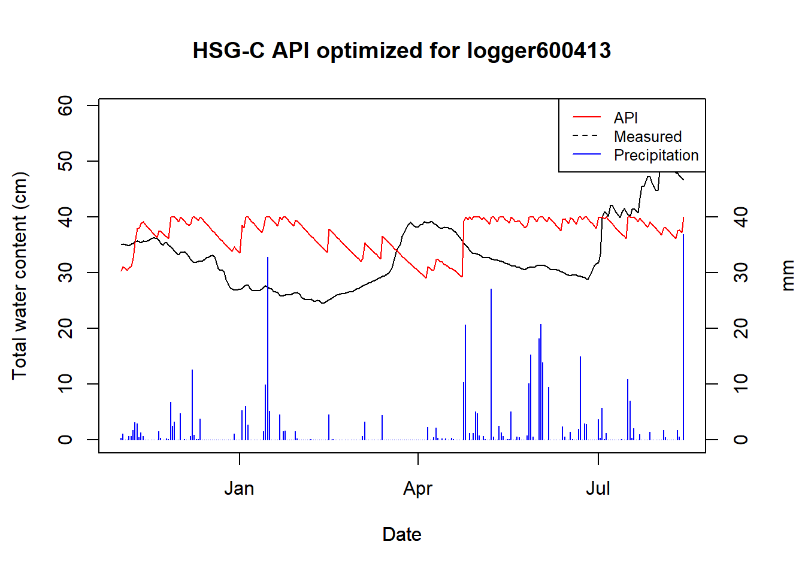

Section 8 Antecedent Precipitation Index
8.1 Introduction
SWATFarmR cannot account for operations based on values modeled by SWAT+, such as soil moisture. This is because FarmR does not run the model itself, and creates and pre-defines all the management schedules based on measured climate data. This means we need to relate our measured climate data to our soil moisture (Because soil moisture is an important factor in planning agricultural operations). One method to do this is called the Antecedent Precipitation Index. Which is what we will creating for CS10 in this part.
As a heads up, this section requires Python!
8.1.1 Pre-requirements
Required R packages
require(readr)
require(dplyr)
require(hydroGOF)
library(reticulate) # Required Python packages: "pandas", "numpy", "scipy"
source("model_data/code/plot_api.R")
source("model_data/code/calc_api.R")8.1.2 Setting up Python for R/Rmarkdown
A quick (non-evaluated) code block to show how a python environment can be created for use in Rmarkdown/Reticulate on your local machine.
# install miniconda
install_miniconda()
# create conda environment for your project
conda_create("cs10_env", # environment name
packages = c("pandas", "numpy", "scipy"), # required packages
conda = "auto")
conda_python("cs10_env") # returns the .exe python path for your environment
# you need to change your R environment path in this file
usethis::edit_r_environ()
# RETICULATE_PYTHON="YOUR ENVIRONMENT PATH/python.exe"
# restart your R session.
py_config()
# If everything is right, you should get something like:
# python: YOUR ENVIRONMENT PATH/python.exe libpython: YOUR ENVIRONMENT
# PATH/python39.dll pythonhome: YOUR ENVIRONMENT PATH version: 3.9.7 (default,
# Sep 16 2021, 16:59:28) [MSC v.1916 64 bit (AMD64)] Architecture: 64bit numpy:
# YOUR ENVIRONMENT PATH\lib\site-packages\numpy numpy_version: 1.21.2
# After this it should work :)8.2 Antecedent Precipitation Index
From (Patrignani 2020)
The API is a well-known, parsimonious, recursive model for predicting soil moisture solely based on precipitation records. The API is commonly implemented using daily precipitation records, but it is possible to work at finer temporal scales (e.g. hourly) if both precipitation (model input) and soil moisture (for validation purposes) are available. The equation describing the simple version of the model is:
\[API_{t} = \alpha API_{t-1} + P_t\]
\(API_t\): Soil water content at time \(t\) (today)
\(API_{t-1}\): Soil water content at time \(t-1\) (yesterday)
\(\alpha\): Loss coefficient. Range between 0 and 1
\(P_t\): Precipitation at time \(t\) (today)
8.2.1 Loading data
We will load out data from the previous steps. (ref)
logger_data <- read_csv("model_data/field_sites/loggers/clean/logger_data_daily_clean.csv",
show_col_types=F)
# we only need SMC for this part
logger_data = logger_data %>% filter(var == "smc")
site_attributes <-
read_csv("model_data/field_sites/output/field_site_attr_df.csv",
show_col_types = F)
pcp_data <- read_csv("model_data/field_sites/loggers/clean/pcp_data_clean.csv",
show_col_types = F)
head(site_attributes)## # A tibble: 5 × 8
## id SOIL_ID SNAM.x Id SNAM.y SOL_ZMX HYDGRP TEXTURE
## <dbl> <dbl> <chr> <dbl> <chr> <dbl> <chr> <chr>
## 1 600413 23 ST 0 Sea_dep_thick 800 C sandy loam
## 2 600411 1 AB 0 ARdy 1000 C loamy_sand
## 3 600410 20 RGah 0 GLum-ar 1000 B sandy_loam
## 4 600409 13 Humic 0 GLch-hu-sl 1000 D silty_clay_loam
## 5 600408 13 Humic 0 GLch-hu-sl 1000 D silty_clay_loamWe will calculate the model per Hydrologic soil group (HSG), and start with B, which was measured by logger 600410.
b_data <- logger_data %>% filter(site == "600410")8.2.2 Calculating the total water content
We need to calculate the total water content of the profile from the depth measurements from the following depths:
unique(b_data$depth)## [1] "300" "450" "600" "750" "900"Following code is modified from Patrignani (2020) (read more)
(This calculation could be improved by considering the soil horizons)
a <- b_data %>% filter(depth == "300") %>% select(value)
b <- b_data %>% filter(depth == "450") %>% select(value)
c <- b_data %>% filter(depth == "600") %>% select(value)
d <- b_data %>% filter(depth == "750") %>% select(value)
e <- b_data %>% filter(depth == "900") %>% select(value)
total_water_content <-
a * .35 + # from 0 to 35
b * .15 + # from 35 to 50
c * .15 + # from 55 to 65
d * .15 + # from 65 to 80
e * .20 # from 80 to 100
b_col <- tibble(b_data %>% filter(depth == "300") %>% select(date), total_water_content)And we can add the precipitation data from 6.2.4
b_col <- left_join(b_col, pcp_data, by = "date")
plot_api(obs = b_col, title = "HSG B")(#fig:hsg_b_twc_plot)Total water content for logger 600410 (HSG B)
Saving the data
write_csv(b_col, "model_data/field_sites/output/twc.csv")8.2.3 Defining API model
The value is capped at the maximum value of the source data (50). This could be improved by capping site specific.
def api_model(P,alpha=0.97,ini=36.8):
api = [ini]
for t in range(1,len(P)):
append_val = api[t-1]*alpha + P[t]
if append_val > 50:
append_val = 50
api.append(append_val)
return apiLoad in our data:
import pandas as pd
df = pd.read_csv('model_data/field_sites/output/twc.csv')
df = df[['date','value','pcp']]
df.head()## date value pcp
## 0 2021-11-02 36.880 0.3
## 1 2021-11-03 36.930 1.1
## 2 2021-11-04 36.995 0.0
## 3 2021-11-05 37.025 0.0
## 4 2021-11-06 37.030 0.7As a test, we will calculate the predictions with an alpha of 0.95:
import pandas as pd
from scipy.optimize import curve_fit
# guess
storage_guessed = api_model(df['pcp'], alpha=0.95, ini=36.8)
# write to text
dates = df[['date']]
guess = pd.DataFrame(dates.values.tolist(),storage_guessed)
guess.to_csv("model_data/field_sites/output/first_guess.csv")Now we can have a look at it in R
guess <- read_csv("model_data/field_sites/output/first_guess.csv",
show_col_types = F,
skip = 1, col_names = c("val", "date"))
plot_api(api_vals = guess, obs = b_col, title = "HSG-B API guessed")
Now we optimize the alpha parameter using scipy curve_fit.
par_opt, par_cov = curve_fit(api_model, df['pcp'], df['value'], p0=[0.95,100])
print('Annual mean alpha value is',round(par_opt[0],2))## Annual mean alpha value is 0.98Now we can calculate the API using the optimized parameter.
import numpy as np
storage_optimized = api_model(df['pcp'],par_opt[0],par_opt[1])
# Mean Absolute Error
MAE = np.mean(np.abs(df['value'] - storage_optimized))
print('Mean annual error =', round(MAE,1),'cm')## Mean annual error = 9.1 cmAnd save the data for R
dates = df[['date']]
api_optimized = pd.DataFrame(dates.values.tolist(),storage_optimized)
api_optimized.to_csv("model_data/field_sites/output/api_optimized.csv")And have a look in R:
optimized <- read_csv("model_data/field_sites/output/api_optimized.csv",
show_col_types = F,
skip = 1, col_names = c("val", "date"))
plot_api(api_vals = optimized, obs = b_col, title = "HSG-B API optimized")
Not great, but also not surprising considering no account for snow melt has been done, nor do we have good logger data.
We will define this workflow in a function calc_api.R and run it for
the next loggers.
calc_api(logger_id = "600409")## Warning in py_to_r.pandas.core.frame.DataFrame(x): index contains duplicated
## values: row names not set
## HSG Alpha
## "D" "1"This is the logger with broken data, so no surprise that the optimizer failed.
calc_api(logger_id = "600411")## Warning in py_to_r.pandas.core.frame.DataFrame(x): index contains duplicated
## values: row names not set
## HSG Alpha
## "C" "0.99"calc_api(logger_id = "600413")## Warning in py_to_r.pandas.core.frame.DataFrame(x): index contains duplicated
## values: row names not set
## HSG Alpha
## "C" "0.99"8.3 Conclusions
For HSG B we got an alpha of 0.98, for C we have two samples, both of which got 0.99, and D has two samples as well, but we currently only have data for one. For the one D site we had, the logger data was very poor and the covariance could not be estimated.
Overall, the API does not seem to be a great estimator of soil moisture for our specific case. Our logger data is poor and has been cut short due to sensor malfunctions. With a longer time series covering more seasons, it is likely that the curve fitting could be improved upon, and the overall dynamics could be appraised.;
Secondly, and more critically: the API does not account for snow melt, which plays a significant role in a Boreal catchments such as CS10. You can see this in action (I think) in March where the logger data steadily goes up, while the API steadily goes down. Snow melt could surely be accounted for by adding another model to estimate it – the question is more if it is worth it, considering the poor underlying data of the loggers.
Another complication is, if SWATFarmR does not account for snow melt in its management scheduling, then there is no point in estimating it. And if snow melt is not incorporated into the scheduling, then the operation timing will not be very accurate anyway (since snow melt is such a dominating factor in operation timing).
UPDATE post Q+A Session
We can modify the output of Micha’s script in Section
10.1 by replacing API with our own custom
variable. This variable could be snow melt or something else entirely
(like a trafficability thing?) This is pretty straight forward, we just
need to add the index to the FarmR using add_variable(). One thing we
need to keep in mind is that this needs to be compatible for the climate
scenarios (i.e. we can only base it off climate variables which we also
have future data on.)
Some things to consider:
Run SWAT+ for the weather data + scenarios data and use the calculated snow melt
Re-create the snow melt model of SWAT+ and use that
Use HBV or Persist models
Use some tractability index for Norway (Attila?)